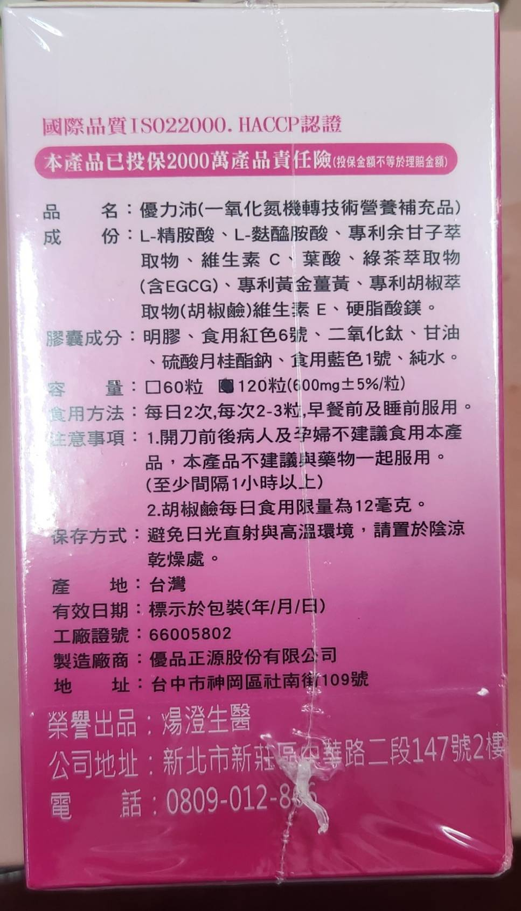
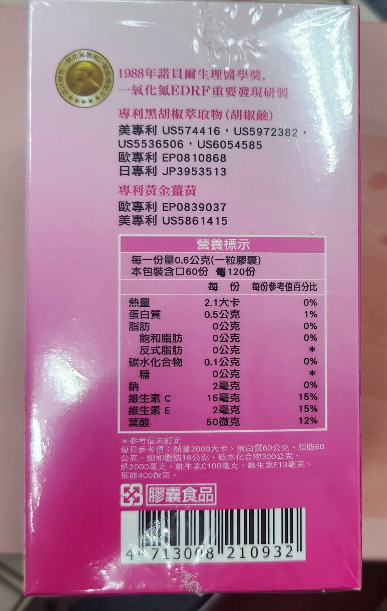
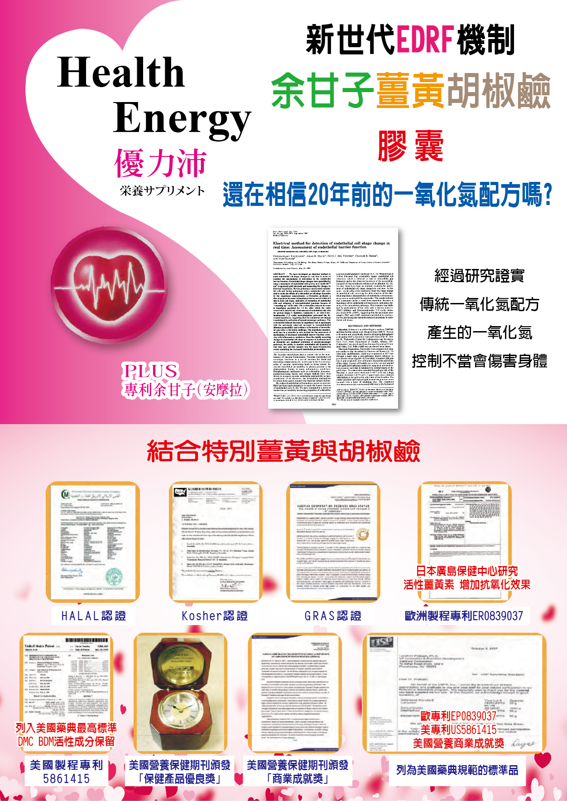
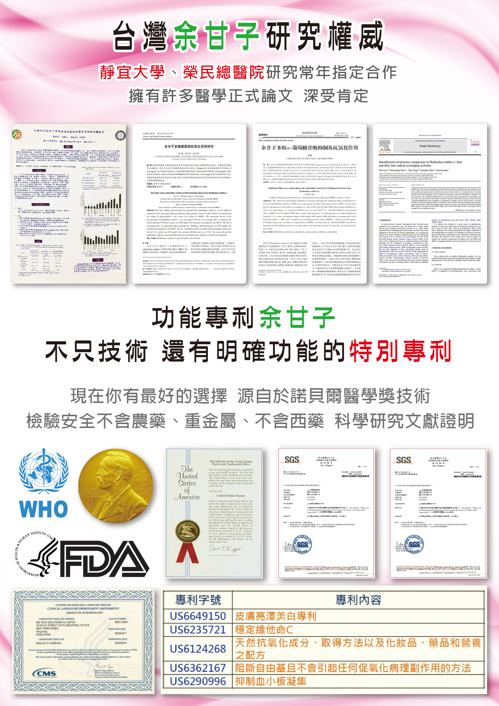

忙碌的日子裡，早餐前兩顆、睡前兩顆，是滿意家想陪你養成的小習慣。 專利余甘子、黃金薑黃、胡椒鹼，台灣製造，多國專利把關， 讓你安心，也讓在乎你的家人安心。
| 成分 | L-精胺酸、L-麩醯胺酸、專利余甘子萃取物、維生素C、葉酸、綠茶萃取物（含EGCG）、專利黃金薑黃、專利胡椒萃取物（胡椒鹼）、維生素E、硬脂酸鎂 |
|---|---|
| 容量 | 60粒 / 120粒（600mg±5%/粒），每份0.6公克（一粒） |
| 食用方法 | 每日2次，每次2-3粒，早餐前及睡前服用 |
| 注意事項 | 開刀前後病人及孕婦不建議食用，不建議與藥物一起服用（間隔1小時以上）；胡椒鹼每日限量12毫克 |
| 保存方式 | 避免日光直射與高溫環境，置於陰涼乾燥處 |
| 產地 | 台灣（工廠證號 66005802） |
| 製造廠商 | 優品正源股份有限公司（台中市神岡區社南街109號） |
| 榮譽出品 | 煬澄生醫（新北市新莊區中華路二段147號2樓） |